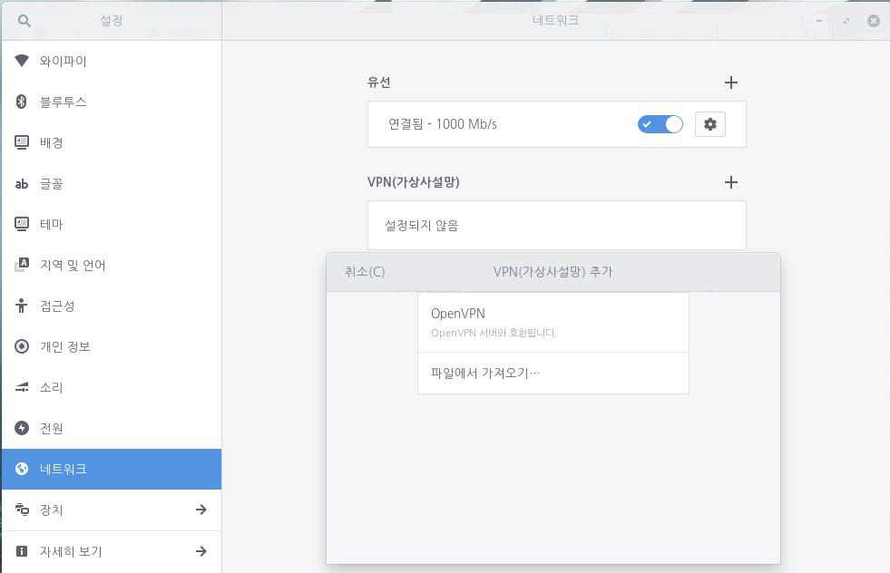
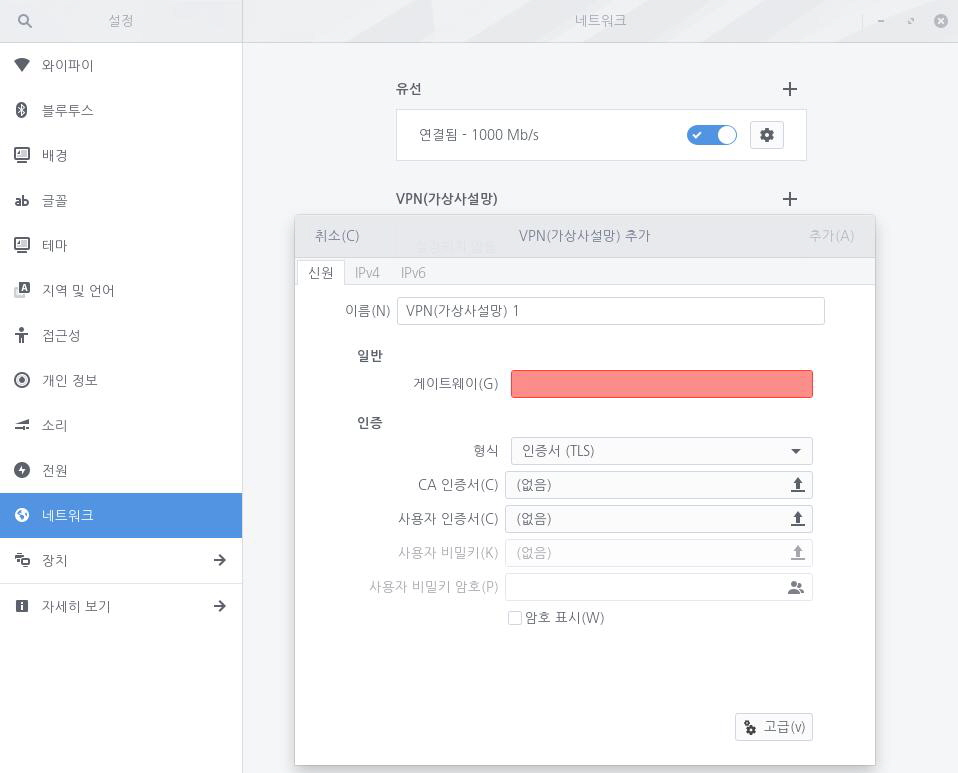
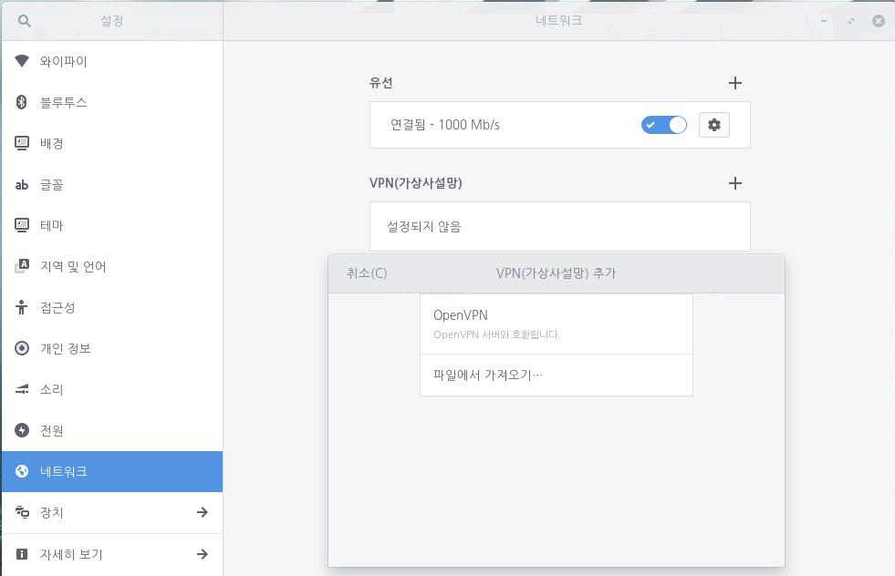
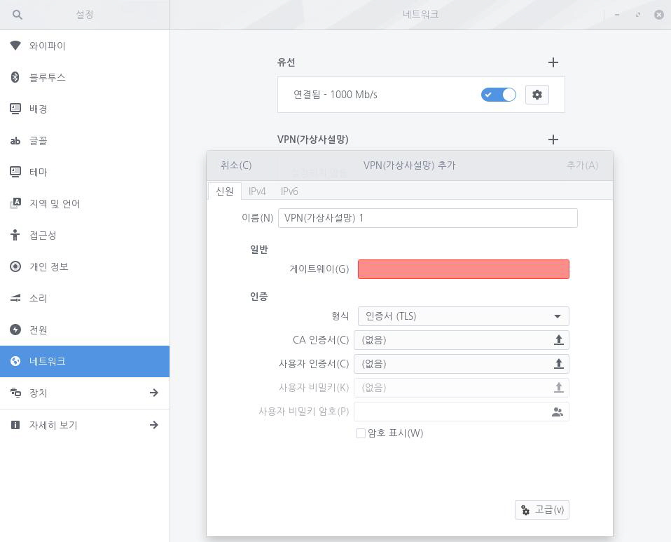

VPN (Virtual Private Network)은 인터넷을 통해 로컬 네트워크에 연결하는 방법입니다. 출장 중에 사무실에 있는 로컬 네트워크에 연결하고 싶은 경우 VPN 연결을 사용할 수 있습니다. VPN을 사용하려면 인터넷 연결이 필요합니다. VPN 연결을 통해 외부에서도 마치 사무실에 출근한 것처럼 원격으로 접속할 수 있습니다. VPN 연결은 일반적으로 다른 사람들이 로컬 네트워크에 접근하는 것을 막기 위해 암호화되어 있습니다. VPN에는 다양한 유형이 있습니다. VPN을 사용하기 위해 특정 소프트웨어를 설치해야 할 수도 있습니다. VPN 연결 담당자로부터 연결 설정 및 VPN 클라이언트 정보를 전달받아야 합니다. VPN과 필요한 네트워크 관리자 패키지를 설치하여 VPN 연결을 완료합니다. 사용자가 선택한 VPN에 필요한 네트워크 관리자 패키지가 없는 경우 VPN 소프트웨어 제공 업체에서 클라이언트 소프트웨어를 다운로드하여 설치해야 할 수 있습니다. 다음 단계를 수행하여 VPN 연결을 설정합니다.1. 좌측 하단의 [시작]아이콘을 클릭하고 검색 창에 "설정"을 입력한 후 [설정] 애플리케이션을 실행합니다.
 2. [설정] 애플리케이션 사이드 바에서 [네트워크]를 클릭합니다.
2. [설정] 애플리케이션 사이드 바에서 [네트워크]를 클릭합니다.
 3. [VPN(가상사설망)] 옆 + 단추를 클릭하고 연결한 VPN 유형을 선택합니다.4. VPN을 생성하려면 CA 인증서와 사용자 인증서가 필요합니다. CA와 사용자 인증서는 OpenSSL로 생성할 수 있습니다. [고급] 단추를 눌러 세부 항목을 설정하고 [IPv4] 또는 [IPv6] 탭에서 IP주소 등을 자동 또는 수동으로 설정할 수 있습니다.5. VPN 설정이 끝나면 연결을 위한 비밀번호를 입력해야 합니다. 연결이 생성되면 잠금 모양의 아이콘을 확인할 수 있습니다. 6. 그래도 VPN에 연결되지 않은 경우 VPN 설정을 다시 한번 확인해야 합니다.
3. [VPN(가상사설망)] 옆 + 단추를 클릭하고 연결한 VPN 유형을 선택합니다.4. VPN을 생성하려면 CA 인증서와 사용자 인증서가 필요합니다. CA와 사용자 인증서는 OpenSSL로 생성할 수 있습니다. [고급] 단추를 눌러 세부 항목을 설정하고 [IPv4] 또는 [IPv6] 탭에서 IP주소 등을 자동 또는 수동으로 설정할 수 있습니다.5. VPN 설정이 끝나면 연결을 위한 비밀번호를 입력해야 합니다. 연결이 생성되면 잠금 모양의 아이콘을 확인할 수 있습니다. 6. 그래도 VPN에 연결되지 않은 경우 VPN 설정을 다시 한번 확인해야 합니다.